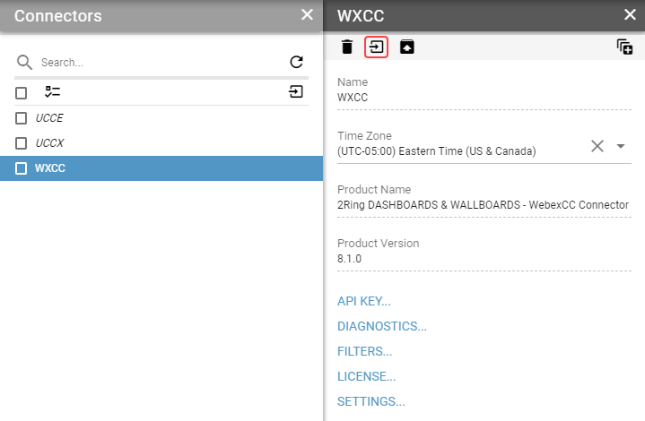

Import Functions¶
To gain more specific and personalized experience, custom calculation functions can be added into a connector by importing a manifest file.
Importing functions is for connectors, that supports custom calculation functions.
For import of the functions, follow these steps:
Select a connector to which you want to add functions and click on Import Functions button.
Click on the paperclip icon and select the manifest file you want to import.
Click on the Validate button to evaluate differences between manifest and current installation of connector.
Because of possible conflicts, reviewing the changes is required before importing functions.
Detected differences will be displayed in Conflicts and Changes sections.
Possible differences:
NEW - This is a new item not yet present in currently installed version. It will be installed.
MANDATORY UPDATE - This item already exists but a new definition will be installed.
OPTIONAL UPDATE - This item already exists and a new definition is available. It will be installed if “Overwrite existing” will be chosen.
LOCKED - This item is locked and cannot be updated.
INCOMPATIBLE - This item definition is incompatible with the current version (merge columns) and cannot be modified to the new version.
OPTIONAL UPDATE is considered as conflict and user has to choose what should happen to record during import.
LOCKED and INCOMPATIBLE are also considered as conflicts but can not be resolved during import of functions. These types of conflicts cause whole function to be skipped regardless of selected conflict resolution mode.Hovering on detected difference’s badge will show its description.
If optional updates are detected select conflicts resolution mode. Available options are:
Overwrite existing - replaces the existing record with the new record.
Keep existing - keeps the existing record.
Skip function with conflict - skips the whole function so it and its child records will not be modified.
Click on Import button.
After an import is done, click on a Close button.